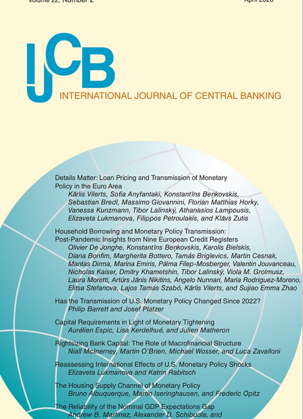

I am an Assistant Professor of Economics at American University. I am also an affiliate member of the H.O. Stekler Research Program on Forecasting at the George Washington University and an associate member of Climate Econometrics at Nuffield College at the University of Oxford. My research interests include time series econometrics and forecasting, applied macroeconometrics, and climate econometrics.
I have published in a range of academic journals including Advances in Econometrics, Annals of Operations Research, Econometrics, Energy Economics, International Journal of Forecasting, International Journal of Central Banking, Science Advances, and Nature Sustainability.
Recent advances in high-frequency identification of monetary policy shocks reveal that measures are contaminated by information and news effects. We contribute to this literature by incorporating the intermittent release of central bank projections, i.e. the Summary of Economic Projections (SEP). We develop a theoretical framework showing that forecast releases amplify monetary policy surprises by providing additional information beyond what is conveyed through interest rate decisions alone and by anchoring expectations during non-release meetings. We confirm empirically that monetary policy surprises following SEP releases are typically 2 to 3 times larger than those without releases. To identify the information channel, we construct novel SEP surprise measures using a Bloomberg survey of market expectations about Federal Reserve projections. SEP surprises explain about 30 percent of the variation in monetary policy surprises during SEP meetings and account for essentially all of the differences between SEP and non-SEP meetings. Finally, to validate that SEP surprises contain economically meaningful information, we show that individual forecasters update their expectations of core PCE inflation in response to both common and their own idiosyncratic SEP surprises.
We examine the heterogeneous effects of mortgage interest rate shocks on house prices in a monthly panel of U.S. cities. Mortgage interest rate shocks, identified using Blue Chip forecast errors and monetary policy surprises, affect house prices more in cities where more borrowers have high debt burdens. This is consistent with a model with both price frictions and credit constraints. Responsiveness to interest rate shocks thus varies by location and time period, and is related to both borrower characteristics and underwriting rules. This has important implications for understanding monetary policy transmission, systemic risk, and the role of household finances in the macroeconomy.
Arguments for nominal income targeting are often dismissed because it is an unreliable measure. To assess these concerns, we compare the real-time performance of several nominal and real measures of economic slack. We find that the nominal GDP expectations gap—the difference between nominal GDP and average projections thereof from surveys of professional forecasters—performs well as a measure of economic slack: its historical revisions are two to three times smaller than other measures, it significantly improves real-time forecasts of inflation since the pandemic, and it makes monetary policy rules up to 40 percent less volatile. Overall, concerns about nominal income targets are misplaced.

Changes to the mass of the polar ice sheets are of scientific and socio-economic importance due to their effect on the wider Earth system and the potential to dominate future sea-level rise. Uncertainty remains around the joint behaviour of these ice sheets, leading sea-level modellers to make assumptions about their interdependence when making projections. We use a multi-cointegration vector autoregression model to assess the statistical relationships between time series of Greenland, West, and East Antarctic ice mass change (1992-2010). Since the ice sheet response to climate forcing integrates over time, we explore three alternative model specifications. We compare I(2) models of cumulative changes in ice mass (levels) with an I(1) model of changes in ice mass (rates), explore their model dynamics, and evaluate the out-of-sample forecasts (2011-2023) against observations. Our results support the use of an I(2) model, which identifies a significant relationship between Greenland and West Antarctica, and a persistent trend in both ice sheets that is correlated with global ocean heat content. Extensions of these forecasts to 2100 show Greenland and Antarctica contributions to global sea level that agree with projections from physical-process models and structured expert judgment compatible with high-emission scenarios.
This paper uses an empirical model that incorporates multiple hazards and vulnerabilities to nowcast direct hurricane damages immediately following landfall on the continental United States over the last quarter century using real-time information. I evaluate the performance of the model by constructing a novel database of real-time damage predictions from commercial catastrophe models. I also analyze how official estimates of damage are revised. I find that my empirical model is substantially more accurate than simpler models that only incorporate wind speed and income. While commercial nowcasts are generally accurate, especially when averaging across multiple models, my empirical model performs best immediately after landfall and when there is a large proportion of uninsured and flood losses. The improved nowcasts are beneficial to many stakeholders including policymakers, insurers, and financial markets.
This paper combines two threads of Harry Markowitz’s research—uncertainty and data mining—to demonstrate a methodology for evaluating and improving the accuracy of empirical models and forecasts, focusing on forecasting. Machine learning with indicator saturation provides a generic framework that includes standard techniques for forecast evaluation, such as mean squared forecast errors, forecast encompassing, tests of predictive failure, and tests of bias and efficiency. Saturation techniques are applicable to both economic and non-economic models and forecasts. This paper illustrates the methodology with forecasts of the U.S. federal debt and of the U.S. labor market. Forecast evaluation is fundamental to assess the forecasts’ usefulness and to specify ways in which the forecasts may be improved.
We model UK price and wage inflation, productivity and unemployment over a century and a half of data, selecting dynamics, relevant variables, non-linearities and location and trend shifts using indicator saturation estimation. The four congruent econometric equations highlight complex interacting empirical relations. The production function reveals a major role for energy inputs additional to capital and labour, and although the price inflation equation shows a small direct impact of energy prices, the substantial rise in oil and gas prices seen by mid-2022 contribute half of the increase in price inflation. We find empirical evidence for non-linear adjustments of real wages to inflation: a wage-price spiral kicks in when inflation exceeds about 6%–8% p.a. We also find an additional non-linear reaction to unemployment, consistent with involuntary unemployment. A reduction in energy availability simultaneously reduces output and exacerbates inflation.